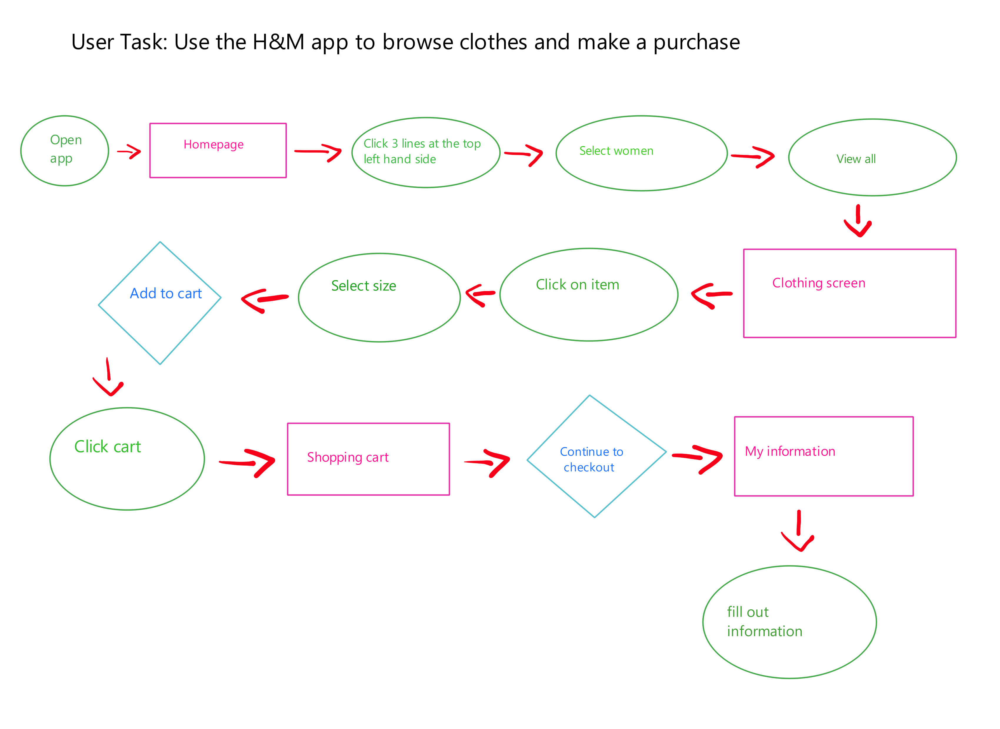
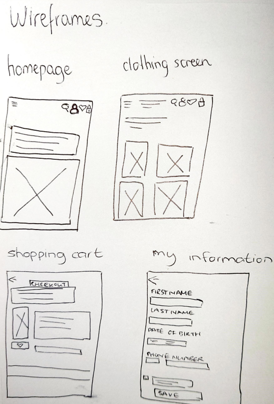
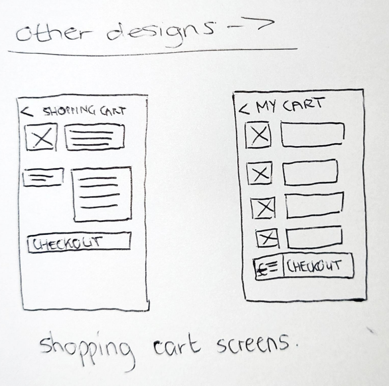

Wireframes
I chose to design the task of using the app H&M to browse clothes and make a purchase.


I chose the "shopping cart" screen to be the key screen. From that I designed two other designs for this key screen.

I personally think that the design on the right would be better suited/successful. This is because the final price of the items in your shopping cart is displayed right next to the checkout button, so the user can clearly see it. I also think that the photos of the products in the shopping cart are neatly displayed.